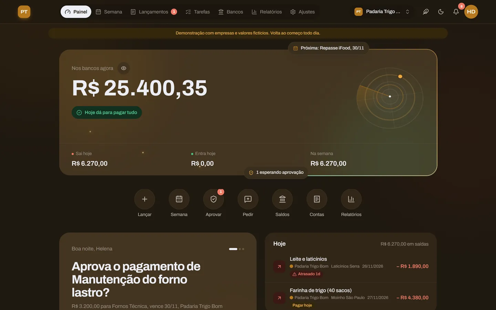
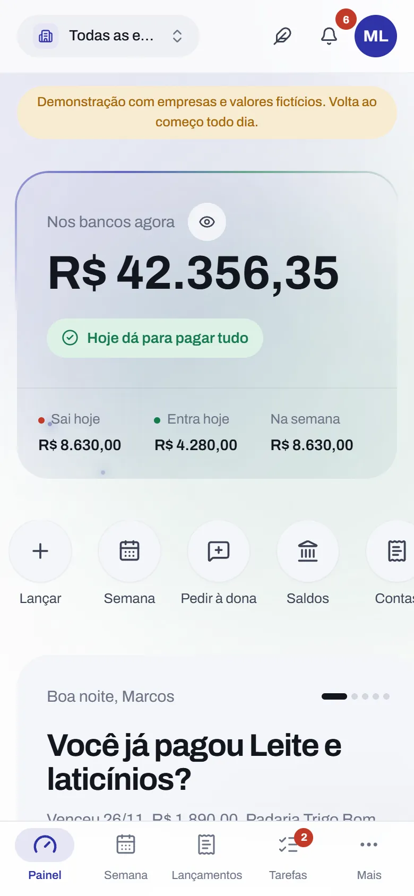

Radar — finance for a group of companies
Try the demo Source private: in daily use
A finance system I built for my family's restaurants, used every day by the owner and her finance person instead of calls and WhatsApp messages. The finance person logs bills and closes a weekly forecast with a margin of error; the owner sees from her phone what is due today and how much must be in the bank, approves payments and sends requests over a task chat. Each company's data is isolated with Postgres row-level security, covered by 52 automated tests, with two-factor login, an audit log, business days with local holidays and OFX bank import. The interface takes on the colors of the selected company's logo. Installable on the phone, light and dark themes, and a lite mode for older devices.


The demo uses a separate database with fictional companies and resets every day.
- Next.js
- TypeScript
- Supabase
- PostgreSQL
- Tailwind CSS
- Vercel